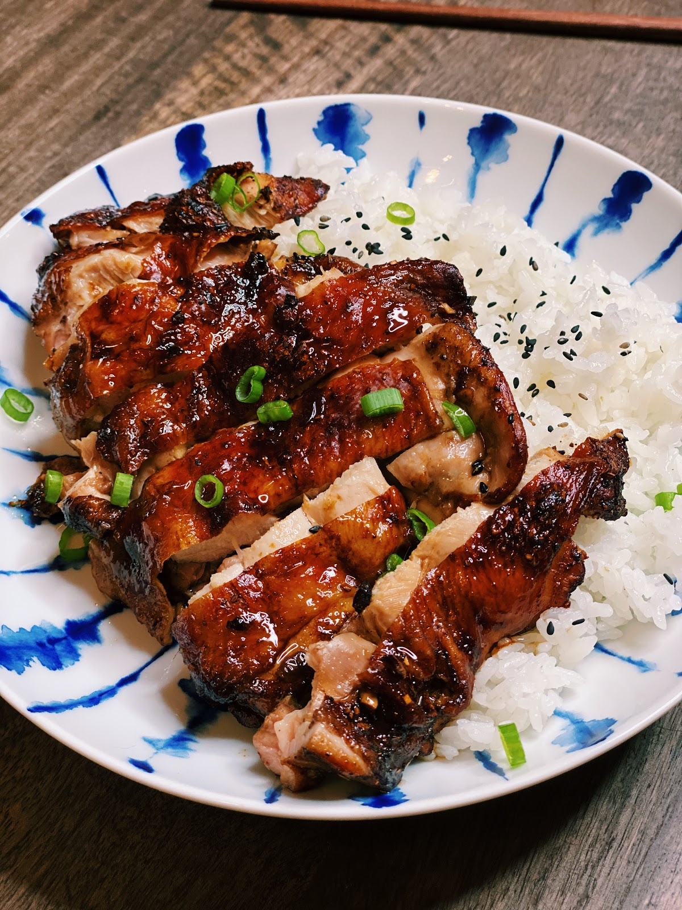

Air Fryer Soy Sauce Chicken

This recipe is the BEST Air Fryer Soy Sauce Chicken you will ever try, and the best part is it is also SUPER easy to make!
The Air Fryer Soy Sauce Chicken is crispy on the outside, while the meat is super juicy and flavourful on the inside.
Don’t say I didn’t warn you about how addicting soy sauce chicken is!
Once you find out how simple it is to make Soy Sauce Chicken at home, you will be having this for chicken at least once a week!
Ingredients
- Boneless Chicken Thigh Skin On
- Soy Sauce
- Dark Soy Sauce
- Five Spice Powder
- White Powder
- Sugar or Honey
- Garlic
Steps
- Marinate the chicken with soy sauce, dark soy sauce, five-spice powder, white pepper, sugar, and minced garlic for 30 minutes.
- Add in the chicken in the air fryer skin side facing up. Set the air fryer at 380F for 15 minutes.